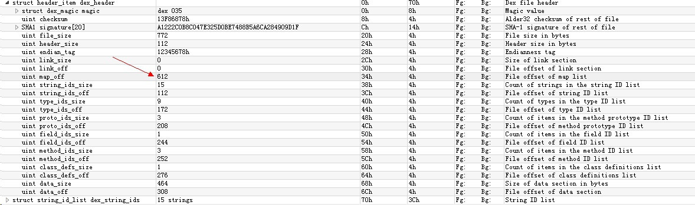
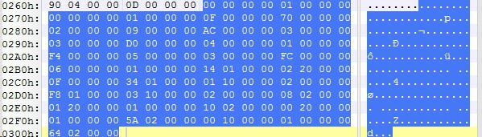

1.dex header
制定dex文件的一些属性，记录其他6部分数据结构在dex文件中的物理偏移
2.string_ids、type_ids、type_ids、proto_ids、field_ids、method_ids、class_def
索引结构区
3.data
真实数据存储在这里
未经过优化的dex文件结构如下：
1
2
3
4
5
6
7
8
9
10
11
12
| struct DexFile
{
DexHeader Header;
DexStringId StringIds[stringIdsSize];
DexTypeId TypeIds[typeIdsSize];
DexProtoId ProtoIds[protoIdsSize];
DexFieldId FieldIds[fieldIdsSize];
DexMethodId MethodIds[methodIdsSize];
DexClassDef ClassDefs[classDefsSize];
DexData Data[];
DexLink LinkData;
}
|
dalvik虚拟机在解析Dex文件的时候，首先根据Dex Header中DexMapList字段，将内容映射到内存

